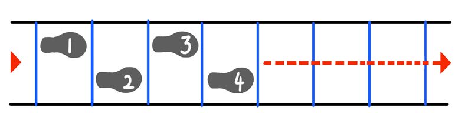
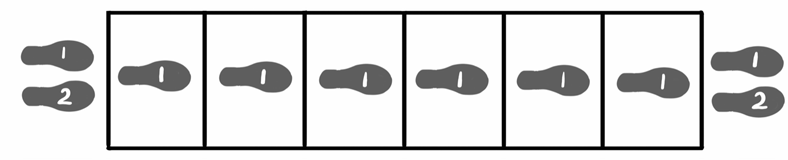

Agility ladder
Perform each of the following exercises in the full length of the agility ladder. Each step of the exercise should be done twice, leading to a different foot each time.
1.
Alternate stepping with only one foot on each box (left, right, left, right).

Figure 7: Stepping in the agility ladder on one foot at a time
2.
Jump into each box with one foot while keeping your other foot above the ground all the time.

Figure 8: Jumping into the agility ladder using one leg at a time
3.
Step with both feet into each box before moving to the next box. Always move one foot first.